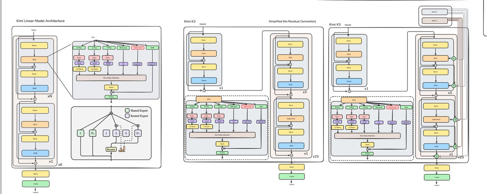

22580。 这就是七年里我们放大模型的倍数：Kimi K3 (2.8T参数) 约等于22580个GPT-2 (124M)。但这仅仅是规模吗？在这篇工作日志中，追溯了从GPT-2到Kimi K3的完整架构演进。核心论点：每一次架构变革都不是盲目的缩放，而是为解决前一个系统的固有限制：模型存储什么、如何更新状态、以及如何检索固定大小状态无法保留的信息。
GPT-2是纯decoder-only架构。输入接收token和位置嵌入，每个Transformer块包含注意力机制和前馈网络。推理时的一个关键低效： 模型为每个输入位置计算表示，但每个解码步骤只消耗最终位置的logits来选择下一个token。如果不缓存，大部分工作会在下一个token时重复计算。KV缓存正是来自这个直观观察：存储先前所有token的键和值向量，避免冗余计算。但KV缓存随着序列长度线性增长，可能成为内存带宽瓶颈。

GPT-2约124M参数、12块、12头、嵌入维度768。而Kimi K3约2.8T参数：22580倍。
Softmax注意力在与键查询的乘积后施加非线性，使每个查询与每个键耦合。线性注意力则对查询和键分别应用特征映射（如ELU+1），使乘积可重新结合：不断增长的键值向量集可以被折叠成一个固定的D×D状态。但这有一个权衡：特征映射是软最大核的一个表达力较弱的近似，可能降低保真度。
文章澄清了一个常见误解：论文中O(N²) 的说法现在看已经过时：Flash Attention和KV缓存已经解决了这个问题。但回到2020年，训练通常要物化完整的N×N注意力矩阵，没有Flash Attention。每次解码步骤执行两次ND读取和两次1D写入到HBM，KV缓存随序列长度线性增长。
线性注意力的核心运作方式：仍然执行三个步骤：使查询键得分非负（线性用ELU+1，softmax用指数）、除以总和、计算值的加权平均。这保留了基本的注意力契约，但使用了表达力较弱的特征映射。
一个固定大小的缓存必须覆写或与已存储的信息合并。token i-1的状态没有自己的独立插槽，它被加到同一个D×D矩阵上。新的查询因此不能再完美地检索每个早期token的孤立表示。更新是加性的且没有信息离开缓存：一旦状态超出有效容量，关联开始相互干扰。 这就是线性注意力主要限制的根源。
DeltaNet的关键洞察： 当一个新事实被写入时，首先查询当前键从缓存中检索到什么已有信息。然后从想要存储的值中减去这个已有信息，将结果乘上键再加回。旧信息被移除，新信息被写入到它的位置。这实现了对缓存内容的精确更新。

但在实践中，Delta规则要求在prefill阶段每个键向量都需要修正，不像标准注意力那样可以直接并行矩阵乘法。分块公式化（Chunked Formulation） 提供了更高效的方法：将输入输出分成若干大小为C的块。块内做标准注意力（掩码QKᵀ×V），块间做递归顺序（先状态再查询）。成本分裂成两部分：固定部分2Ld²（状态工作，与C无关），增长部分2LCd（对角线上的得分矩阵）。C=1时纯FLOP最便宜，但GPU在更大的矩阵乘法上有更好的硬件利用率。
DeltaNet虽然能精确替换单个键值关联，但这种机制只能遗忘有特定替代的关联。它不能在上下文切换时高效清除多个关联，也不能让记忆普遍衰减以释放容量。

如果纯加法线性注意力，只需添加一个控制遗忘状态的参数：这就是Mamba-2的贡献：按动态比例均匀衰减先前的所有键值关联。但均匀衰减忽略了不同关联的不同重要性。DeltaNet能更新单个事实，但无法让其余事实衰减。
Gated DeltaNet结合了Mamba的门控更新规则与DeltaNet的精确替换能力。 它添加一个参数alpha（0到1之间的标量）：设为1时切换到纯Delta规则，设为0时清空记忆。累积衰减 γʳ/γⁱ 项：在时间步x写入、x+t读取的token，已被乘以 αₓ·αₓ₊₁·αₓ₊₂·…·αₓ₊ₜ：这是前缀乘法的对偶。
研究人员开始实验混合架构后，Kimi Linear引起关注的一个核心主张是：在受控对比下，它超越了全注意力。作者将其呈现为架构升级：更好质量和高达6倍解码吞吐。Kimi Linear在Gated DeltaNet上的改进是引入细粒度门控：为每个通道学习单独的衰减值，而非单个标量衰减。

在DeltaNet Transformer旁边，Kimi Linear引入了三个主要变化：混合系统：交替使用MLA层；MoE：用专家混合层替代MLP；额外的容量：通过alpha投影给DeltaNet增加容量。关键突破不是盲目的缩放，而是容量必须以系统能利用的形式添加到正确的位置。每一代新架构都增加容量来解决前一个系统的具体限制。
Kimi K3的语言骨干与上述Kimi Linear模型类似。它包含23个四层宏循环。每个宏循环中，三层使用KDA，第四层使用MLA。第一层使用密集前馈网络，其余每层使用潜空间MoE。从Kimi Linear到K3的主要变化：规模大幅增加、每12层一次AttnRes、MLA query LoRA和输出门控、潜空间MoE、SiTU激活、门控MLA。

Gated MLA：决定MLA的每个检索特征有多少通过元素级乘法传递到残差流中。潜空间MoE：Kimi K3共有898个专家，其中2个共享（处理每个token），剩余896个中路由器为每个token选择16个。SiTU激活：将输入下投影到共享专家，最终求和后再上投影。专家在压缩潜空间中操作，使其前向更快，FLOPs几乎减半。
AttnRes（注意力残差）：每12层应用一次，增加约2% 推理延迟，但提供两个重要好处：对更早表示的选择性检索（缓解残差稀释和隐藏状态增长），以及1.25倍计算优势。传统残差连接中，不同层类型接收相同的聚合状态。AttnRes为每项乘上一个专门的权重alpha_i：从查询键点积计算，归一化到总和为1，加权的状态组合让模型能对最有用层的重要性进行差异化。
从GPT-2到Kimi K3，核心变化不是规模本身。每一步架构步骤都在改变模型存储什么、如何更新状态、以及如何检索固定大小状态无法保留的信息。
Kimi K3结合了常量状态循环记忆、周期性softmax检索、稀疏专家容量和选择性深度残差访问。结果是一个在特定功能角色处增加额外容量的系统。本质而言，固定容量关联记忆需要驱逐策略。纯加法线性操作一旦达到容量上限就会引入干扰。为此，学习型选择性（门控、路由或衰减）是必要的，而注意力是最有效的选择性读取机制。
参考：https://x.com/waterloo_intern/status/2081762065392541951